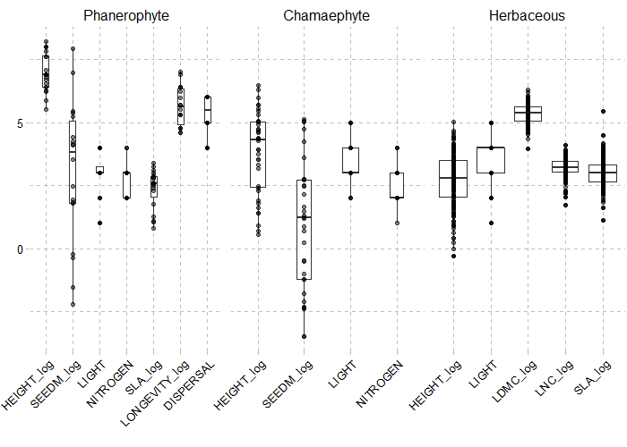
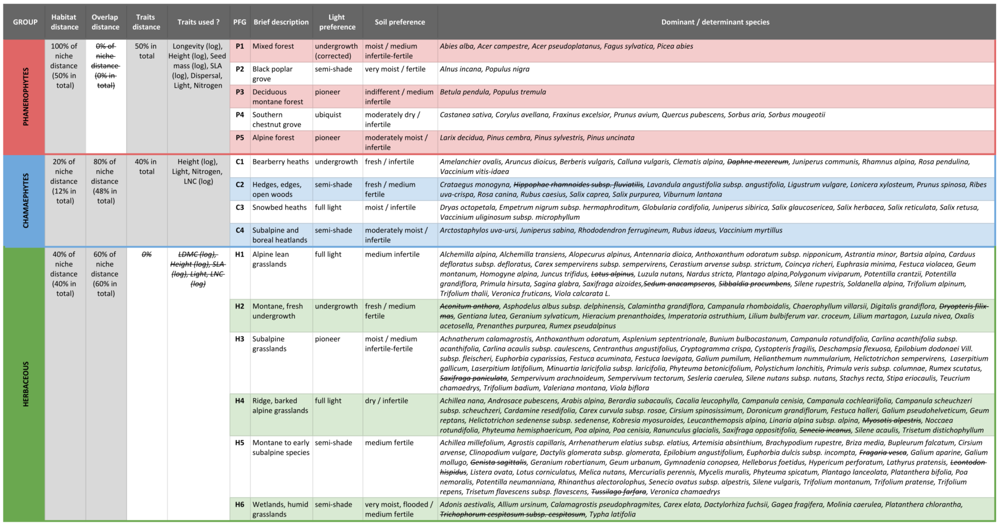
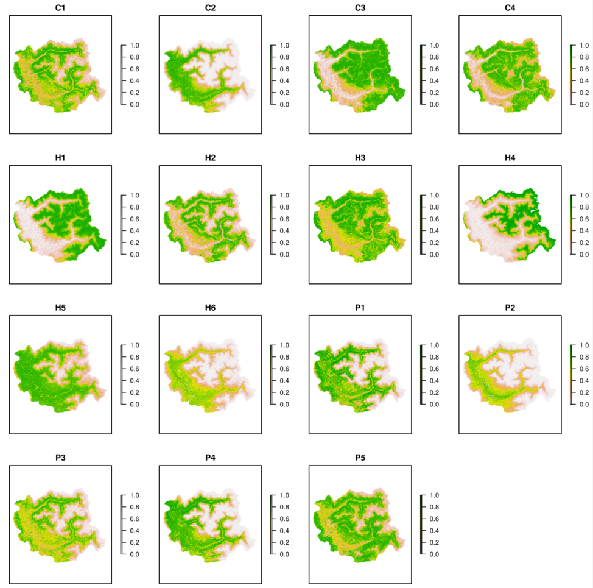
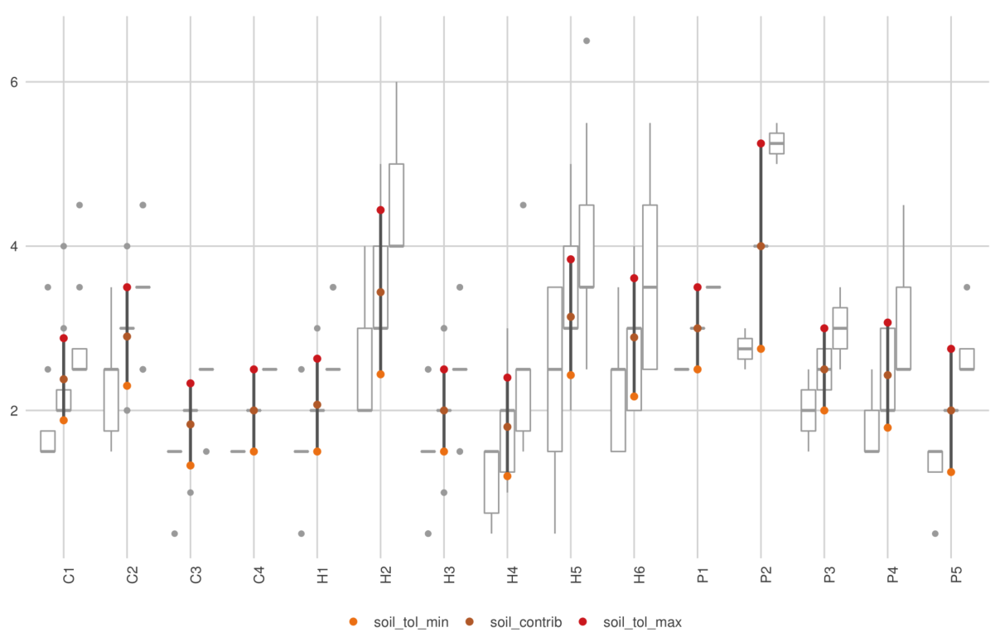
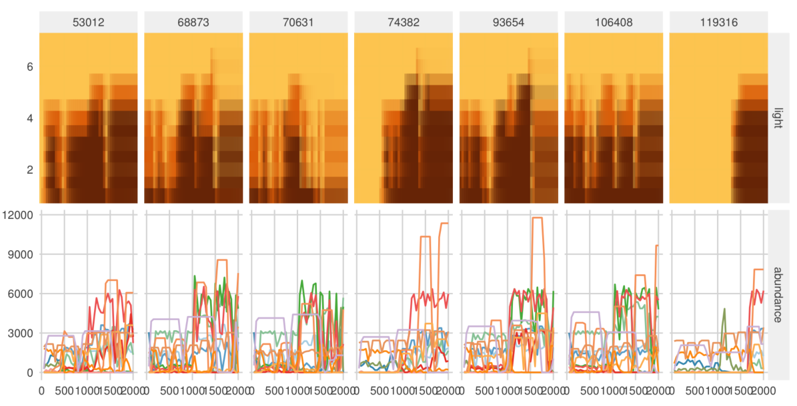
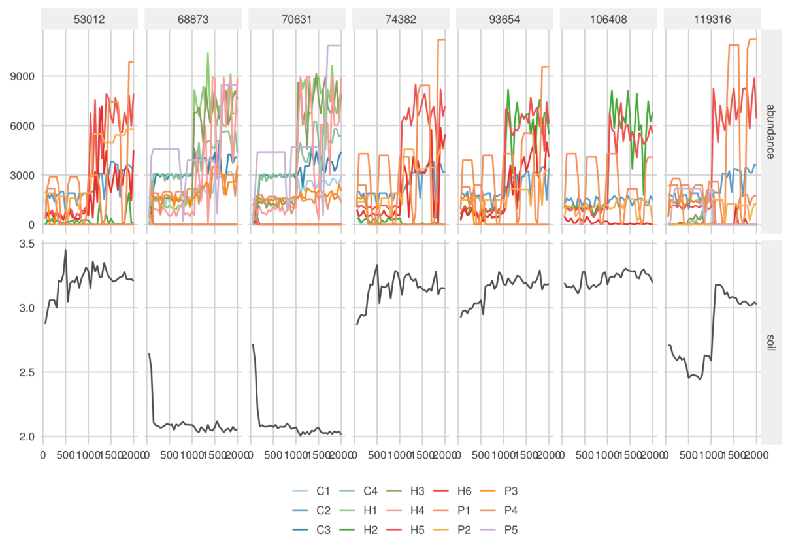
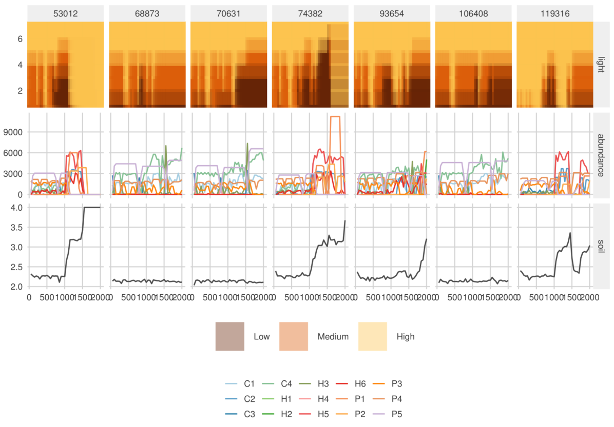
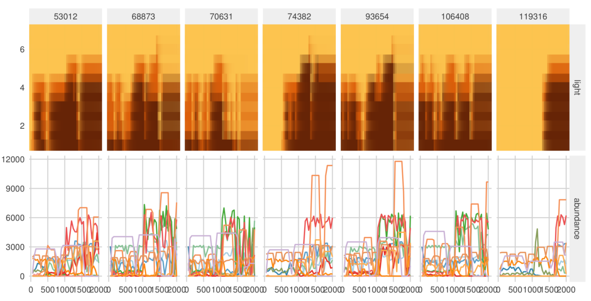
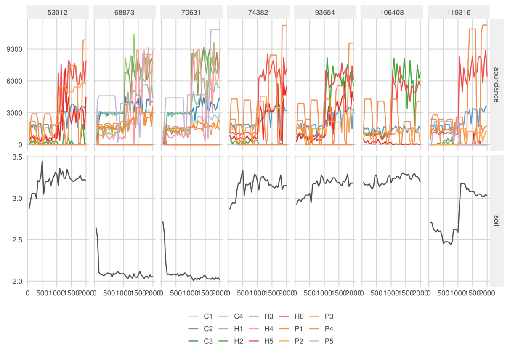
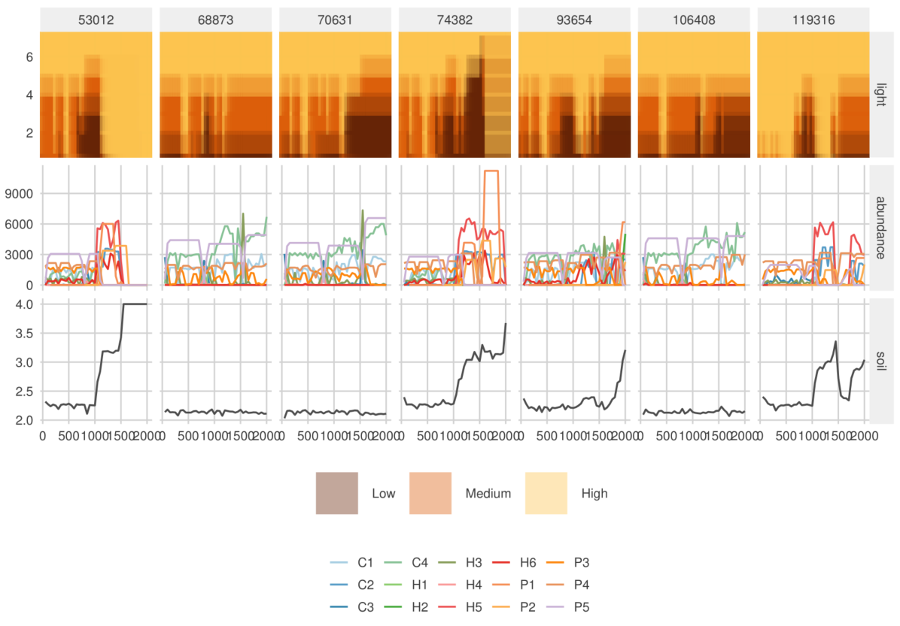

Complete code example
The different parts of the Champsaur example dataset can
be downloaded with the .loadData function, or from
the links below :
RData |
7z |
V1.7z |
V2.7z |
V3.7z |
V4.7z |
|||
|---|---|---|---|---|---|---|---|---|
| 1. PFG | 3. simul | |||||||
| 2. params | 4. results |
1. Building Plant Functional Group
library(RFate)
Champsaur_PFG = .loadData("Champsaur_PFG", "RData")
###################################################################################################
## DOMINANT SPECIES
###################################################################################################
## Species observations
tab.occ = Champsaur_PFG$sp.observations
str(tab.occ)
## Run selection ----------------------------------------------------------------------------------
sp.SELECT = PRE_FATE.selectDominant(mat.observations = tab.occ[, c("sites", "species", "abund")]
, doRuleA = TRUE
, rule.A1 = 10
, rule.A2_quantile = 0.88
, doRuleB = TRUE
, rule.B1_percentage = 0.25
, rule.B1_number = 10
, rule.B2 = 0.5
, doRuleC = FALSE
, opt.doRobustness = TRUE
, opt.robustness_percent = seq(0.1, 0.9, 0.1)
, opt.robustness_rep = 10
, opt.doSitesSpecies = TRUE
, opt.doPlot = TRUE)
## Explore results
names(sp.SELECT)
str(sp.SELECT[1:5])
str(sp.SELECT$tab.rules)
plot(sp.SELECT$plot.A)
plot(sp.SELECT$plot.B$abs)
plot(sp.SELECT$plot.B$rel)
plot(sp.SELECT$plot.pco$Axis1_Axis2)
# plot(sp.SELECT$plot.pco$Axis1_Axis3)
str(sp.SELECT$tab.robustness)
names(sp.SELECT$plot.robustness)
plot(sp.SELECT$plot.robustness$`All dataset`)
## Prepare data to calculate pairwise species distance --------------------------------------------
# ## Calculate mat.overlap matrix
# ## Add absences in community sites
# tab.dom.PA = sp.SELECT$tab.dom.PA
# for (si in tab.occ$sites[which(tab.occ$TYPE == "COMMUNITY")])
# {
# ind = which(rownames(tab.dom.PA) == si)
# tab.dom.PA[ind, which(is.na(tab.dom.PA[ind, ]))] = 0
# }
#
# ## Prepare environmental (and traits) table
# tab.env = Champsaur_PFG$tab.env
# tmp.traits = Champsaur_PFG$sp.traits[, c("species", "HEIGHT", "HEIGHT_log")]
# sp.DIST = PRE_FATE.speciesDistance(mat.traits = tmp.traits
# , mat.overlap.option = "PCA"
# , mat.overlap.object = list(tab.dom.PA, tab.env))
# mat.overlap = sp.DIST$mat.OVERLAP
# (mat.overlap[1:5, 1:5])
## Transform dissimilarity matrices into similarity distances
mat.habitat = Champsaur_PFG$mat.habitat
mat.overlap = Champsaur_PFG$mat.overlap
mat.habitat = 1 - mat.habitat
mat.overlap = 1 - mat.overlap
## Load selected traits for each group
tab.traits.P = Champsaur_PFG$sp.traits.P
tab.traits.C = Champsaur_PFG$sp.traits.C
tab.traits.H = Champsaur_PFG$sp.traits.H
str(tab.traits.P)
str(tab.traits.C)
str(tab.traits.H)
###################################################################################################
## PHANEROPHYTE
###################################################################################################
## Calculate pairwise species distance ------------------------------------------------------------
sp.DIST.P = PRE_FATE.speciesDistance(mat.traits = tab.traits.P
, mat.overlap.option = "dist"
, mat.overlap.object = mat.habitat
, opt.weights = c(0.5, 0.5)
, opt.maxPercent.NA = 0.25
, opt.maxPercent.similarSpecies = 0.5
, opt.min.sd = 0.5)
str(sp.DIST.P)
{
require(foreach)
require(ggplot2)
require(ggdendro)
pp = foreach(x = names(sp.DIST)) %do%
{
hc = hclust(as.dist(sp.DIST[[x]]))
pp = ggdendrogram(hc, rotate = TRUE) +
labs(title = paste0("Hierarchical clustering based on species distance "
, ifelse(length(names(sp.DIST)) > 1
, paste0("(group ", x, ")")
, "")))
return(pp)
}
plot(pp[[1]])
plot(pp[[2]])
plot(pp[[3]])
}
## Build clusters and choose final groups number --------------------------------------------------
sp.CLUST1.P = PRE_FATE.speciesClustering_step1(sp.DIST.P$mat.ALL)
sp.CLUST2.P = PRE_FATE.speciesClustering_step2(clust.dendrograms = sp.CLUST1.P$clust.dendrograms
, no.clusters = 5
, mat.species.DIST = sp.DIST.P$mat.ALL)
names(sp.CLUST2.P)
str(sp.CLUST2.P$determ.sp)
str(sp.CLUST2.P$determ.all)
plot(sp.CLUST2.P$plot.distance)
plot(sp.CLUST2.P$plot.PCO$GROUP1)
###################################################################################################
## CHAMAEPHYTE
###################################################################################################
## Combine distances of habitat preferences and niche overlap
## to have one matrix to reflect the species niches
wei.habi = 0.5
wei.over = 0.5
ind.sp = intersect(colnames(mat.overlap), colnames(mat.habitat))
mat.env = (wei.habi * mat.habitat[ind.sp, ind.sp] + wei.over * mat.overlap[ind.sp, ind.sp]) / (wei.habi + wei.over)
(mat.habitat[ind.sp, ind.sp][1:5, 1:5])
(mat.overlap[ind.sp, ind.sp][1:5, 1:5])
(mat.env[1:5, 1:5])
## Calculate pairwise species distance ------------------------------------------------------------
sp.DIST.C = PRE_FATE.speciesDistance(mat.traits = tab.traits.C
, mat.overlap.option = "dist"
, mat.overlap.object = mat.env
, opt.weights = c(0.4, 0.6)
, opt.maxPercent.NA = 0.25
, opt.maxPercent.similarSpecies = 0.5
, opt.min.sd = 0.5)
## Build clusters and choose final groups number --------------------------------------------------
sp.CLUST1.C = PRE_FATE.speciesClustering_step1(sp.DIST.C$mat.ALL)
sp.CLUST2.C = PRE_FATE.speciesClustering_step2(clust.dendrograms = sp.CLUST1.C$clust.dendrograms
, no.clusters = 4
, mat.species.DIST = sp.DIST.C$mat.ALL)
###################################################################################################
## HERBACEOUS
###################################################################################################
## Rearrange data (more difficult to distinguish groups among herbaceous species) -----------------
## Separate some species quite different from the rest
SP_wetlands = c("15735", "15211", "10429", "17167", "40501", "16522", "40514", "14782", "40445", "14316")
SP_outliers = c("11223", "5445", "14024", "11035", "10477")
tab.traits.H = tab.traits.H[-which(tab.traits.H$species %in% SP_wetlands), ]
tab.traits.H = tab.traits.H[-which(tab.traits.H$species %in% SP_outliers), ]
## Put more weights on overlap matrix
wei.habi = 0.4
wei.over = 0.6
ind.sp = intersect(colnames(mat.overlap), colnames(mat.habitat))
mat.env = (wei.habi * mat.habitat[ind.sp, ind.sp] + wei.over * mat.overlap[ind.sp, ind.sp]) / (wei.habi + wei.over)
(mat.habitat[ind.sp, ind.sp][1:5, 1:5])
(mat.overlap[ind.sp, ind.sp][1:5, 1:5])
(mat.env[1:5, 1:5])
## Calculate pairwise species distance ------------------------------------------------------------
sp.DIST.H = PRE_FATE.speciesDistance(mat.traits = tab.traits.H
, mat.overlap.option = "dist"
, mat.overlap.object = mat.env
, opt.weights = c(0, 1)
, opt.maxPercent.NA = 0.25
, opt.maxPercent.similarSpecies = 0.5
, opt.min.sd = 0.5)
## Build clusters and choose final groups number --------------------------------------------------
sp.CLUST1.H = PRE_FATE.speciesClustering_step1(sp.DIST.H$mat.ALL)
sp.CLUST2.H = PRE_FATE.speciesClustering_step2(clust.dendrograms = sp.CLUST1.H$clust.dendrograms
, no.clusters = 7
, mat.species.DIST = sp.DIST.H$mat.ALL)
## Groups H6 (adventices) and H7 (outlier species) will be removed
## SP_wetlands will become PFG H6
###################################################################################################
## PLANT FUNCTIONAL GROUPS
###################################################################################################
tab.PFG = Champsaur_PFG$PFG.species
tab.PFG = tab.PFG[which(tab.PFG$DETERMINANT == "TRUE"), ]
tab.traits = Champsaur_PFG$sp.traits
tab.summary = tab.traits[, c("species", "MATURITY", "LONGEVITY", "HEIGHT", "LIGHT"
, "DISPERSAL", "NITROGEN", "NITROGEN_TOLERANCE", "LDMC", "LNC")]
colnames(tab.summary) = c("species", "maturity", "longevity", "height", "light"
, "dispersal", "soil_contrib", "soil_tolerance", "LDMC", "LNC")
tab.summary$soil_contrib = as.numeric(tab.summary$soil_contrib)
tab.summary$soil_tolerance = ifelse(tab.summary$soil_tolerance == 1, 0.5, 1)
tab.summary = merge(tab.PFG[, c("PFG", "species")], tab.summary, by = "species", all.x = TRUE)
tab.summary$soil_tolerance[which(tab.summary$PFG %in% c("H2", "P2") & tab.summary$soil_tolerance == 0.5)] = 1
head(tab.summary)
tab.dom.PA = as.data.frame(Champsaur_PFG$tab.dom.PA)
tab.dom.PA = tab.dom.PA[, which(colnames(tab.dom.PA) %in% tab.summary$species)]
## Calculate trait values per PFG -----------------------------------------------------------------
PFG.traits = PRE_FATE.speciesClustering_step3(mat.traits = tab.summary, opt.mat.PA = tab.dom.PA)Traits used to build functional groups should
reflect the community strategies that are taken into account in
FATE, such as :
- life cycle (through maturity, longevity…)
- strategy for dispersal
- strategy for light (through height, light preference…)
- strategy for soil (through LNC, nitrogen, soil preference…)
- habitat and overall strategy (through LDMC, SLA, CSR strategy…)
They should be standardized (scale, log-transformation…) to
be sure that they will all have similar importance.
Traits
selected were the ones with enough values, and enough
variation.

A brief description of the Plant Functional Groups
obtained for the Champsaur dataset is presented
below. Among selected dominant species, some species
have been pointed out as Not determinant by the PRE_FATE.speciesClustering_step2
function (difference between dominant and determinant species is
explained in the Details
section of this function).

2. Creating FATE parameter files
Build PFG habitat suitability maps (biomod2
package)
library(RFate)
Champsaur_params = .loadData("Champsaur_params", "RData")
###################################################################################################
## BUILD PFG HABSUIT MAPS (biomod2 package)
###################################################################################################
require(biomod2)
## Species observations
tab.occ = Champsaur_params$tab.occ
str(tab.occ)
## Sites environmental table
tab.env = Champsaur_params$tab.env
str(tab.env)
## Sites coordinates table
tab.xy = Champsaur_params$tab.xy
str(tab.xy)
## Raster stack for projection
stk.var = Champsaur_params$stk.var
## Run species distribution models ----------------------------------------------------------------
for(pfg in colnames(tab.occ))
{
nrep = 5
sp.name = pfg
sp.occ = tab.occ[which(!is.na(tab.occ[, pfg])), pfg]
sp.xy = tab.xy[which(!is.na(tab.occ[, pfg])), c("X", "Y")]
sp.var = tab.env[which(!is.na(tab.occ[, pfg])), ]
#########################################################################################
## BELOW, MOST CHANGES WILL BE FOR MODELS PARAMETERS OR ADAPT DATA
## ALL NEEDED DATA HAS BEEN PRESENTED PREVIOUSLY
## formating data in a biomod2 friendly way ------------------------------------
bm.form <- BIOMOD_FormatingData(resp.var = as.matrix(sp.occ)
, expl.var = sp.var
, resp.xy = sp.xy
, resp.name = sp.name)
## define models options -------------------------------------------------------
bm.opt <- BIOMOD_ModelingOptions(GLM = list(type = "quadratic", interaction.level = 0, test = "AIC")
, GAM = list(k = 3))
bm.mod <- BIOMOD_Modeling(bm.format = bm.form
, models = c('RF', 'GLM', 'GAM')
, bm.options = bm.opt
, nb.rep = nrep
, data.split.perc = 70
, prevalence = 0.5
, var.import = 3
, metric.eval = c('TSS','ROC')
, do.full.models = FALSE
, modeling.id = 'mod1')
## run ensemble models ---------------------------------------------------------
bm.em <- BIOMOD_EnsembleModeling(bm.mod = bm.mod
, models.chosen = "all"
, em.by = "all"
, metric.select = c('TSS')
, metric.select.thresh = 0.4
, metric.eval = c('TSS', 'ROC')
, prob.mean = FALSE
, prob.mean.weight = TRUE
, prob.mean.weight.decay = 'proportional'
, committee.averaging = TRUE
, var.import = 3)
## project ensemble models -----------------------------------------------------
bm.ef <- BIOMOD_EnsembleForecasting(EM.output = bm.em
, new.env = stk.var
, output.format = ".img"
, proj.name = "CURRENT_100m"
, selected.models = "all"
, binary.meth = c('TSS'))
}
## --------------------------------------------------------------------------------------
## This code gives a quick and rough idea of the
## PFG communities that should be found within the simulation area
## For example here :
## H6 is mainly found with : C2 and P2 (edges, very humid and fertile groups)
## H5 is mainly found with : P1, P3 and P4 / H2, C1 and P5 (montane and subalpine forests)
# library(phyloclim)
# type.mod = "wmean" # "ca"
# list.fi = paste0(sort(colnames(tab.occ)), "/proj_CURRENT_100m/individual_projections/"
# , sort(colnames(tab.occ)), "_EM", type.mod, "ByTSS_mergedAlgo_mergedRun_mergedData.img")
# stk.wmean = stack(list.fi)
# stk.wmean = stk.wmean / 1000
# names(stk.wmean) = sub("_.*", "", names(stk.wmean))
# stk.wmean[which(stk.wmean[] < 0)] = 0
# stk.wmean[which(stk.wmean[] > 1)] = 1
# HS.stk[] = ifelse(stk.wmean[] > 0.5, 1, 0)
# HS.list = lapply(1:nlayers(HS.stk), function(x) as(HS.stk[[x]], 'SpatialGridDataFrame'))
# nich = as.matrix(niche.overlap(HS.list))
# colnames(nich) = rownames(nich) = sapply(names(HS.stk), function(x) strsplit(x, "_")[[1]][2])
# library(corrplot)
# colo = colorRampPalette(c('#9e0142','#d53e4f','#f46d43','#fdae61','#fee08b','#ffffbf'
# ,'#e6f598','#abdda4','#66c2a5','#3288bd','#5e4fa2'))
# corrplot(nich, method = "square", type = "lower", diag = FALSE
# , col = colo(20), cl.lim = c(0,1), order = "hclust"
# , tl.srt = 25, tl.offset = 1)
Create FATE simulation folder and parameter files
library(RFate)
Champsaur_params = .loadData("Champsaur_params", "RData")
###################################################################################################
## CREATE FATE PARAMETER FOLDER
###################################################################################################
PRE_FATE.skeletonDirectory(name.simulation = "FATE_Champsaur")
## Create PFG parameter files ---------------------------------------------------------------------
## SUCCESSION ---------------------------------------------------------------------------
PRE_FATE.params_PFGsuccession(name.simulation = "FATE_Champsaur"
, strata.limits = c(0, 20, 50, 150, 400, 1000, 2000)
, strata.limits_reduce = FALSE
, mat.PFG.succ = Champsaur_params$tab.SUCC)
## DISPERSAL ----------------------------------------------------------------------------
# ## Load example data
# Champsaur_PFG = .loadData("Champsaur_PFG", "RData")
#
# ## Build PFG traits for dispersal
# tab.traits = Champsaur_PFG$PFG.traits
# ## Dispersal values
# ## = Short: 0.1-2m; Medium: 40-100m; Long: 400-500m
# ## = Vittoz correspondance : 1-3: Short; 4-5: Medium; 6-7:Long
# corres = data.frame(dispersal = 1:7
# , d50 = c(0.1, 0.5, 2, 40, 100, 400, 500)
# , d99 = c(1, 5, 15, 150, 500, 1500, 5000)
# , ldd = c(1000, 1000, 1000, 5000, 5000, 10000, 10000))
# tab.traits$d50 = corres$d50[tab.traits$dispersal]
# tab.traits$d99 = corres$d99[tab.traits$dispersal]
# tab.traits$ldd = corres$ldd[tab.traits$dispersal]
# str(tab.traits)
PRE_FATE.params_PFGdispersal(name.simulation = "FATE_Champsaur"
, mat.PFG.disp = Champsaur_params$tab.DISP)
## LIGHT --------------------------------------------------------------------------------
PRE_FATE.params_PFGlight(name.simulation = "FATE_Champsaur"
, mat.PFG.light = Champsaur_params$tab.LIGHT[, c("PFG", "type")]
, mat.PFG.tol = Champsaur_params$tab.LIGHT[, c("PFG", "strategy_tol")])
.setParam(params.lines = "FATE_Champsaur/DATA/PFGS/LIGHT/LIGHT_P1.txt"
, flag = "LIGHT_TOL"
, flag.split = " "
, value = "1 1 0 1 1 1 1 1 1")
## SOIL ---------------------------------------------------------------------------------
PRE_FATE.params_PFGsoil(name.simulation = "FATE_Champsaur"
, mat.PFG.soil = Champsaur_params$tab.SOIL)
## Create simulation related parameter files ------------------------------------------------------
## SAVING YEARS -------------------------------------------------------------------------
PRE_FATE.params_savingYears(name.simulation = "FATE_Champsaur"
, years.maps = seq(50, 2000, 50))
## GLOBAL PARAMS ------------------------------------------------------------------------
combi = expand.grid(doLight = c(FALSE, TRUE), doSoil = c(FALSE, TRUE))
for (ii in 1:nrow(combi))
{
PRE_FATE.params_globalParameters(name.simulation = "FATE_Champsaur"
, opt.saving_abund_PFG_stratum = TRUE
, opt.saving_abund_PFG = TRUE
, opt.saving_abund_stratum = FALSE
, required.no_PFG = 15
, required.no_strata = 7
, required.simul_duration = 2000
, required.seeding_duration = 1000
, required.seeding_timestep = 1
, required.seeding_input = 100
, required.potential_fecundity = 1
, required.max_abund_low = 1000
, required.max_abund_medium = 2000
, required.max_abund_high = 3000
, doLight = combi$doLight[ii]
, LIGHT.thresh_medium = 8000 #6000
, LIGHT.thresh_low = 12000 #10000
, LIGHT.saving = TRUE
, doSoil = combi$doSoil[ii]
, SOIL.init = 2.5
, SOIL.retention = 0.8
, SOIL.saving = TRUE
, doDispersal = TRUE
, DISPERSAL.mode = 1
, DISPERSAL.saving = FALSE
, doHabSuitability = TRUE
, HABSUIT.mode = 1)
}
.setParam(params.lines = "FATE_Champsaur/DATA/GLOBAL_PARAMETERS/Global_parameters_V4.txt"
, flag = "LIGHT_THRESH_MEDIUM"
, flag.split = " "
, value = "6000")
.setParam(params.lines = "FATE_Champsaur/DATA/GLOBAL_PARAMETERS/Global_parameters_V4.txt"
, flag = "LIGHT_THRESH_LOW"
, flag.split = " "
, value = "10000")
## SIMUL_PARAM --------------------------------------------------------------------------
writeRaster(Champsaur_params$stk.mask
, filename = paste0("FATE_Champsaur/DATA/MASK/MASK_"
, names(Champsaur_params$stk.mask), ".tif")
, bylayer = TRUE)
writeRaster(Champsaur_params$stk.wmean
, filename = paste0("FATE_Champsaur/DATA/PFGS/HABSUIT/HS_"
, names(Champsaur_params$stk.wmean), "_0.tif")
, bylayer = TRUE)
.adaptMaps(name.simulation = "FATE_Champsaur", extension.old = "tif", extension.new = "tif")
PRE_FATE.params_simulParameters(name.simulation = "FATE_Champsaur"
, name.MASK = "MASK_Champsaur.img")
## --------------------------------------------------------------------------------------
## This code represents the repartition of interaction strategies for soil and light
# Champsaur_params = .loadData("Champsaur_params", "RData")
# tab = merge(Champsaur_params$tab.LIGHT, Champsaur_params$tab.SOIL, by = c("PFG", "type"))
# tab$strategy_tol = factor(tab$strategy_tol, c("undergrowth", "semi_shade", "ubiquist", "pioneer", "full_light"))
# library(ggplot2)
# library(ggthemes)
# ggplot(tab, aes(x = strategy_tol, y = soil_contrib)) +
# geom_boxplot(varwidth = TRUE) +
# labs(x = "", y = "Soil contribution\n") +
# theme_pander()
3. Running a FATE simulation
library(RFate)
## Select a parameter file
param = "Simul_parameters_V1.1.txt"
# param = "Simul_parameters_V2.1.txt"
# param = "Simul_parameters_V3.1.txt"
# param = "Simul_parameters_V4.1.txt"
## Run the simulation
## (here parallelized on 4 resources, and showing only warning and error messages)
FATE(simulParam = paste0("FATE_Champsaur/PARAM_SIMUL/", param)
, no_CPU = 4
, verboseLevel = 2)Explore, understand and tune the parameters
When using the Light module, the
LIGHT_THRESH_MEDIUM and LIGHT_THRESH_LOW
parameters will depend on the PFG abundances within a pixel. For
example, a simulation in which a pixel will contain 5 or 6 PFG, each
with a maximum total abundance around 5000, will have different
parameter values than a simulation in which a pixel will contain 10 PFG
with a maximum total abundance set to 1000.
In the same way, these parameters can change depending on the module
activated. Here, the values of LIGHT_THRESH_MEDIUM and
LIGHT_THRESH_LOW change between the simulations 2
(only Light) and 4 (Light +
Soil).
## --------------------------------------------------------------------------------------
## This code calculates for each PFG its maximum total abundance :
## MaxAbund * (1 + ImmSize)
# ma_low = .getParam(params.lines = "FATE_Champsaur/DATA/GLOBAL_PARAMETERS/Global_parameters_V1.txt"
# , flag = "MAX_ABUND_LOW", flag.split = " ", is.num = TRUE)
# ma_med = .getParam(params.lines = "FATE_Champsaur/DATA/GLOBAL_PARAMETERS/Global_parameters_V1.txt"
# , flag = "MAX_ABUND_MEDIUM", flag.split = " ", is.num = TRUE)
# ma_hig = .getParam(params.lines = "FATE_Champsaur/DATA/GLOBAL_PARAMETERS/Global_parameters_V1.txt"
# , flag = "MAX_ABUND_HIGH", flag.split = " ", is.num = TRUE)
# tab = as.data.frame(fread("FATE_Champsaur/DATA/PFGS/SUCC_COMPLETE_TABLE.csv"))
# tab = tab[, c("NAME", "HEIGHT", "LONGEVITY", "MATURITY", "MAX_STRATUM", "MAX_ABUNDANCE", "IMM_SIZE")]
# tab$maxi_mat = sapply(tab$MAX_ABUNDANCE, function(x) switch(x, "1" = ma_low, "2" = ma_med, "3" = ma_hig))
# tab$maxi_tot = tab$maxi_mat * (1 + tab$IMM_SIZE / 10)
# head(tab)
When using the Soil module, the ranges of soil
tolerance (SOIL_LOW and SOIL_HIGH) of all PFG
should overlap in a balanced way : not too much, otherwise no effect of
the soil module will be seen, but enough to ensure PFG survival.

In any case, it is good to keep in mind that it does not
exist ONE good parametrization, but rather a gradient of parameter
values along which more or less effect will be seen.
For example, Light module can be activated, but if the thresholds
are well above pixel abundances, it will have no impact on the
communities. As the thresholds are lowered, the interaction for light
will become increasingly important, leading at some point to the crash
of some PFG.
4. Analyzing results
## .loadData("Champsaur_results", "7z") :
## table outputs and graphic pdf files only
library(RFate)
## Select a parameter file
param = "Simul_parameters_V1.1.txt"
# param = "Simul_parameters_V2.1.txt"
# param = "Simul_parameters_V3.1.txt"
# param = "Simul_parameters_V4.1.txt"
simul.name = "FATE_Champsaur"
simul.param = paste0("FATE_Champsaur/PARAM_SIMUL/", param)
###################################################################################################
## TEMPORAL EVOLUTION
###################################################################################################
POST_FATE.temporalEvolution(name.simulation = simul.name
, file.simulParam = simul.param
, no_years = 40)
POST_FATE.graphic_evolutionCoverage(name.simulation = simul.name
, file.simulParam = simul.param)
POST_FATE.graphic_evolutionPixels(name.simulation = simul.name
, file.simulParam = simul.param)
POST_FATE.graphic_evolutionStability(name.simulation = simul.name
, file.simulParam = simul.param)
###################################################################################################
## RELATIVE ABUNDANCE / BINARY MAPS & VALIDATION
###################################################################################################
Champsaur_params = .loadData("Champsaur_params", "RData")
## PFG observations
tab.occ = Champsaur_params$tab.occ
tab.xy = Champsaur_params$tab.xy
## Merge observations and sites coordinates
tab.obs = merge(tab.occ, tab.xy, by = "row.names")
tab.obs = melt(tab.obs, id.vars = c("Row.names", "X", "Y"))
colnames(tab.obs) = c("sites", "X", "Y", "PFG", "obs")
tab.obs = na.exclude(tab.obs)
head(tab.obs)
POST_FATE.relativeAbund(name.simulation = simul.name
, file.simulParam = simul.param
, years = 2000)
POST_FATE.graphic_validationStatistics(name.simulation = simul.name
, file.simulParam = simul.param
, years = 2000
, mat.PFG.obs = tab.obs[, c("PFG", "X", "Y", "obs")])
POST_FATE.binaryMaps(name.simulation = simul.name
, file.simulParam = simul.param
, years = 2000
, method = 1
, method1.threshold = 0.05)
POST_FATE.graphic_mapPFGvsHS(name.simulation = simul.name
, file.simulParam = simul.param
, years = 2000)
###################################################################################################
## VISUALIZATION OF OUTPUTS
###################################################################################################
POST_FATE.graphic_mapPFG(name.simulation = simul.name
, file.simulParam = simul.param
, years = 2000
, opt.stratum_min = 1
, opt.stratum_max = 6)The evolutionCoverage
graphic allows a rapid evaluation of the presence and the importance
of PFG at the end of the simulation.
The mapPFG graphics
give spatial representations.
The evolutionPixels
can help understand the dynamics between different modules when
selecting the same pixels.
 
